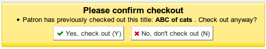
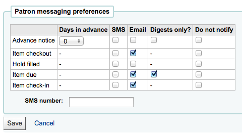

Patrons
Get there: More > Administration > Global system preferences > Patrons
General
AllowPatronToControlAutoRenewal
Asks : ___ to allow/disallow auto-renewal for account. If allowed a patron will be able to update their own account to allow/disallow auto-renewal.
Default: Allow only staff
Values:
Allow only staff
Allow patrons
Description:
If set to ‘Allow patrons’, patrons will be able to enable or disable automatic renewals from their online account on the OPAC. Only items for which automatic renewal is enabled in the circulation rules will be affected.
In all cases, staff is able to change this in the patron’s account.
CheckPrevCheckout
Asks: ___ check borrower checkout history to see if the current item has been checked out before.
Default: Do not
Values:
Do
Do not
Unless overridden by patron category, do
Unless overridden by patron category, do not
Description:
When the value of this system preference is set to ‘do’, Koha will look at the patron’s circulation history to see if they have checked this item out before. An alert will show up on the screen indicating that patron has indeed checked this item out. Staff will be prompted to allow the checkout to occur.

If the value is set to ‘do not’, Koha will not check the patron’s circulation history.
When the value is set to ‘Unless overridden by patron category, do’, this will check the patron’s circulation history unless the patron’s personal setting or the patron category setting specifically say not to.
Lastly, if the value is set to ‘Unless overridden by patron category, do not’, Koha will not check circulation history unless the patron’s personal setting or the patron category setting specifically say to check.
Note
This system preference will not work for patrons that have chosen to anonymize their reading history.
CheckPrevCheckoutDelay
Asks: Trigger a warning if the current item has been checked out no longer than ___ days ago.
Default: 0
Description:
This system preference limits the behavior of CheckPrevCheckout to a number of days. If an item has been borrowed by a patron longer than the number of days, there will be no warning, as if the patron had never borrowed it.
Requires CheckPrevCheckout to be enabled.
There is no time limit if this is set to 0 or is empty.
DefaultPatronSearchFields
Asks: ___ Comma separated list defining the default fields to be used during a patron search
Default: surname,firstname,othernames,cardnumber,userid
Important possible values can be found in the borrowers table of Koha’s schema located at http://schema.koha-community.org/
Description:
This system preference enables you to define which fields are searched when you do a basic patron search.
These fields will also appear in the drop down menu in the patron search, so you can search only the specific field.
EnableBorrowerFiles
Asks: ___ enable the ability to upload and attach arbitrary files to a borrower record.
Default: Don’t
Values:
Do
Don’t
Description:
When enabled this will add a ‘Files’ tab to the left of the patron detail page where you can view and upload files to the patron record.
ExtendedPatronAttributes
Asks: ___ searching, editing and display of custom attributes on patrons.
Default: Enable
Values:
Don’t enable
Enable
Define attributes in Koha administration
Get there: More > Administration > Patron Attribute Types
Description:
Patron attributes are library-defined custom fields that can be applied to patron records.
Note
Use custom attributes for fields that the default patron record does not support such as driver’s license number or student ID number.
FeeOnChangePatronCategory
Asks: ___ charge a fee when a patron changes to a category with an enrollment fee.
Default: Do
Values:
Do
Don’t
Note
You can set enrollment fees in the patron categories
intranetreadinghistory
Asks: ___ staff to access a patron’s checkout and hold history.
Default: Allow
Important
If you have the OPACPrivacy preference set to ‘Allow’ and the patron has decided to not have their history kept, staff will only see currently checked out items.
Values:
Allow
Don’t allow
Important
Reading history is still stored, regardless of staff being allowed access or not unless the patron has chosen to have their history anonymized via their privacy page.
LockExpiredDelay
Asks: Lock expired patrons after ___ days. Leave empty to disable this behavior.
Default: empty
Description:
This system preference determines after how many days expired patrons are ‘administratively locked’.
Administrative lock prevents patrons from logging into the OPAC.
注解
This system preference requires the misc/cronjobs/cleanup_database.pl cronjob (no parameter necessary other than –confirm)
MaxFine
Asks: The late fine for all checkouts will only go up to ___ [currency].
Default: empty (empty value means no limit)
Description:
This preference controls the default cap on fines accrued by the patron. Leaving this preference blank means that there is no cap on the amount of fines a patron can accrue. If you’d like, single item caps can be specified in the circulation rules matrix.
patronimages
Asks: ___ images to be uploaded and shown for patrons on the staff client.
Default: Allow
Values:
Allow
Don’t allow
Description:
If this preference is set to ‘Allow’ the staff will be able to upload images of patrons either one by one or in bulk. Patrons images will show on the detail page to the left of the patron information. They can also show in the OPAC if you set the OPACpatronimages preference or in the self check out module if you set the ShowPatronImageInWebBasedSelfCheck preference.
PatronsPerPage
Asks: By default, show ___ results per page in the staff client.
Default: 20
Description:
This preference will let you define how many patrons to show on patron search results pages.
ProtectSuperLibrarianPrivileges
- Asks: ___ to access/change superlibrarian privileges. Note: A permitted user
needs to have the ‘permissions’ flag (if no superlibrarian)
Default: Allow only superlibrarians
Values:
Allow all permitted users
Allow only superlibrarians
StatisticsFields
Asks: Show the following fields from the items database table as columns on the statistics tab on the patron record: ___
Default: location|itype|ccode

Important
Enter the values separated by bars (|)
Description:
This preference lets you set which fields will show on the patron record on the Statistics tab.
TrackLastPatronActivity
Asks: ___ track last patron activity. Everytime a patron will connect, the borrowers.lastseen will be updated with the current time.
Default: Don’t
Values:
Don’t
Do
useDischarge
Asks: ___ librarians to discharge borrowers and borrowers to request a discharge.
Default: Don’t allow
Values:
Allow
Don’t allow
Description:
A discharge is a certificate that says the patron has no current checkouts, no holds and owes no money.
Note
In France a “quitus” (“discharge”) is needed if you want to register for an account in a library or a university.
Note
Academic libraries often require that you have a clear record at the library before you can graduate.
Membership expiry
BorrowerRenewalPeriodBase
Asks: When renewing borrowers, base the new expiry date on ___
Default: current date
Values:
current date.
current membership expiry date.
Description:
This preference controls what the patron’s new expiration date will be when you renew their card. Using the ‘current date’ will add the subscription period to today’s date when calculating the new expiration date. Using ‘current membership expiry date’ will add the subscription period to the old expiration date for the patron when renewing their account.
MembershipExpiryDaysNotice
Asks: Send an account expiration notice when a patron’s card will expire in ___ days.
Description:
If you would like to notify patrons that their accounts are about to expire then you can enter a number of days before expiration in this preference. The notice text can be customized in the Notices & slips tool.
Important
You will need to enable the membership expiry cron job for this notice to be sent.
NotifyBorrowerDeparture
Asks: Show a notice that a patron is about to expire ___ days beforehand.
Default: 30
Description:
When the patron attempts to check out materials, a warning will appear in the check out screen of the staff client telling the librarian that the patron’s account is about to expire.
Important
This notice will appear on the patron’s record in the staff client.
Notices and notifications
AutoEmailOpacUser
Asks: ___ an email to newly created patrons with their account details.
Default: Don’t send
Values:
Don’t send
Send
Description:
AutoEmailOpacUser allows library users to be notified by email of their account details when a new account is opened at the email address specified in the AutoEmailPrimaryAddress preference. The email contains the username and password given to or chosen by the patron when signing up for their account and can be customized by editing the ACCTDETAILS notice.
AutoEmailPrimaryAddress
Asks: Use ___ patron email address for sending out emails.
Default: first valid
Values:
alternate
cardnumber as
home
work
first valid
Description:
If you choose ‘first valid’ as the value for AutoEmailPrimaryAddress the system will check the email fields in this order: home, work, then alternate. Otherwise the system will use the email address you specify.
AutoRenewalNotices
Asks: Send automatic renewal notices: ___
Default: (Deprecated) according to –send-notices cron switch
Values:
(Deprecated) according to –send-notices cron switch
never
according to patron messaging preferences
Description:
This system preference determines whether automatic renewal notices
EnhancedMessagingPreferences
Asks: ___ staff to manage which notices patrons will receive and when they will receive them.
Default: Allow
Values:
Allow
Don’t allow
Important
This only applies to certain kinds of notices, overdue notices will be sent based on the library’s rules, not the patron’s choice.
Note
To manage if patrons have also access to these settings, use EnhancedMessagingPreferencesOPAC.
Description:
These messages are in addition to the overdue notices that the library sends. The difference between these notices and overdues is that the patron can opt-in and out of these. Setting this preference to ‘Allow’ will allow staff to choose for patrons to receive any one of the following messages:
Item checkout: A notice that lists all the of the items the patron has just checked out and/or renewed, this is an electronic form of the checkout receipt
Item due: A notice on the day and item is due back at the library
Hold filled: A notice when you have confirmed the hold is waiting for the patron
Item checkin: A notice that lists all the of the items the patron has just checked in
Advanced notice: A notice in advance of the patron’s items being due (staff can choose the number of days in advance)
EnhancedMessagingPreferencesOPAC
Asks: ___ patron messaging setting on the OPAC
Default: Show
Values:
Don’t show
Show
Important
EnhancedMessagingPreferences must be enabled for messaging options to show in the OPAC
Description:
These messages are in addition to the overdue notices that the library sends. The difference between these notices and overdues is that the patron can opt-in and out of these. Setting this preference to ‘Allow’ will allow patrons to choose to receive any one of the following messages:
Item checkout: A notice that lists all the of the items the patron has just checked out and/or renewed, this is an electronic form of the checkout receipt
Item due: A notice on the day and item is due back at the library
Hold filled: A notice when you have confirmed the hold is waiting for the patron
Item checkin: A notice that lists all the of the items the patron has just checked in
Advanced notice: A notice in advance of the patron’s items being due (The patron can choose the number of days in advance)
FallbackToSMSIfNoEmail
Asks: ___ Send purchase suggestion messages by SMS if no patron email is defined.
Default: Disable
Values:
Disable
Enable
Description:
This system preference only applies to notices related to suggestions. If a patron has no email address and has an SMS alert number, the suggestions notices will be sent to their SMS number.
SMSSendDriver
Asks: Use the SMS::Send:: ___ driver to send SMS messages.
Note
This may not work with all providers.
Important
Please refer to your national laws concerning the sending of bulk SMS messages before enabling this feature.
Description:
There are two options for using SMS in Koha. You can use the Email protocol for free by entering ‘Email’ as the SMSSendDriver or you can pay for a SMS driver. Some examples of values for the driver are:
SMS::Send::Us::Ipipi
SMS::Send::US::TMobile
SMS::Send::US::Verizon
SMS::Send::IN::Unicel
Additional values can be found here: http://search.cpan.org/search?query=sms%3A%3Asend&mode=all
Important
Only drivers available as Perl modules will work in this preference, so make sure a Perl module is available before choosing an SMS service.
Once a driver is entered in the preference an option will appear in the staff client and the OPAC on the patron messaging form to choose to receive messages as SMS

Important
You must allow EnhancedMessagingPreferences for this to work.
SMSSendUsername, SMSSendPassword and EmailSMSSendDriverFromAddress
Asks: Define a username/login ___ and a password ___. Override from address with ___ for emails sent using “Email” send driver.
Description:
Some SMS gateway providers require username and password credentials and these can be entered here. Additionally, one specific email address may be required as sender (from address) for all emails sent by the Email SMS send driver.
TalkingTechItivaPhoneNotification
Asks: ___ patron phone notifications using Talking Tech i-tiva (overdue notices, advance notices and holds notices are currently supported).
Default: Disable
Values:
Disable
Enable
Description:
To learn more about setting up this third party product view the Talking Tech chapter.
Important
Requires that you have EnhancedMessagingPreferences set to Allow to use.
UseEmailReceipts
Asks: ___ email receipts to patrons for payments and writeoffs.
Default: Don’t send
Values:
Don’t send
Send
Description:
If set to ‘Send’, Koha will send emails to the patrons for each payment or writeoff done in their account.
Note
The letters used are ACCOUNT_PAYMENT and ACCOUNT_WRITEOFF
You can edit them in the Notices & slips tool.
Patron forms
autoMemberNum
Asks: ___ default the card number field on the patron addition screen to the next available card number
Default: Do
Values:
Do
If the largest currently used card number is 26345000012941, then this field will default to 26345000012942 for the next patron
Don’t
Description:
This preference determines if the patron’s barcode is automatically calculated. This prevents the person setting up the library card account from having to assign a number to the new card. If set to ‘Do’ the system will calculate a new patron barcode by adding 1 to the maximum barcode already present in the database.
BorrowerMandatoryField
Asks: The following database columns must be filled in on the patron entry screen: ___
Default: surname|cardnumber|
Description:
This preference enables the system administrator to choose which fields your library would like required for patron accounts. Enter field names separated by | (bar). This ensures that basic information is included in each patron record. If a patron leaves one of the required fields blank an error message will issue and the account will not be created.
Important
Separate columns with |
Note
For help with field names, ask your system administrator or view the database structure associated with the borrowers table.
Note
If either PatronQuickAddFields or BorrowerMandatoryField (or both) is set, a button labeled “Quick add new patron” will be displayed in the “Patrons” toolbar.
BorrowersTitles
Asks: Borrowers can have the following titles ___
Default: Mr|Mrs|Miss|Ms
Description:
This preference allows the staff to choose the titles that can be assigned to patrons. The choices present as a drop down list when creating a patron record.
Important
Input multiple choices separated by |
BorrowerUnwantedField
Asks: The following database columns will not appear on the patron entry screen: ___
Description:
This preference enables the system administrator to choose which fields your library doesn’t need to see on the patron entry form. Enter field names separated by | (bar).
Important
Separate columns with |
Note
For help with field names, ask your system administrator or view the database structure associated with the borrowers table.
CardnumberLength
Asks: Card numbers for patrons must be ___ characters long.
Description:
The length can be a single number to specify an exact length, a range separated by a comma (i.e., ‘Min,Max’), or a maximum with no minimum (i.e., ^,Max’). If ‘cardnumber’ is included in the BorrowerMandatoryField list, the minimum length, if not specified here, defaults to one.
CollapseFieldsPatronAddForm
Asks: When adding new patrons or editing existing patrons, collapse the following fields from the full form (can still be expanded later)
Values:
Additional attributes and identifiers
Alternate address
Alternate contact
Contact information
Guarantor information
Housebound roles
Library management
Library setup
Main address
OPAC/Staff login
Organization/Patron identity
Patron account flags (existing patrons)
Patron messaging preferences
Patron restrictions (existing patrons)
Description:
This system preference allows you to temporarily hide sections from the patron add form and the patron editing form. The sections will be collapsed and staff will be able to expand them if needed.
If you would rather completely hide sections, without the possibility of expanding them, enter the field names in BorrowerUnwantedField.
PatronDuplicateMatchingAddFields
Asks: The following database columns: ___ will be used to detect possible duplicates when adding a new patron.
Default: surname|firstname|dateofbirth
Description:
This system preference allows you to choose which fields will be used to detect duplicate patrons.
PatronQuickAddFields
Asks: ___ (separate columns with |) add these fields to the patron quick add form when entering a new patron. Displays only mandatory fields and fields specified here. If applicable, the guarantor form will be shown as well, individual fields in that form will be ignored.
Default: blank
Note
See the database schema (borrowers table) to know the field names.
Note If either PatronQuickAddFields or BorrowerMandatoryField (or both) is set, a button labeled “Quick add new patron” will be displayed in the “Patrons” toolbar.
Note
It is possible to add custom patron attributes in the quick add form with the following syntax: patron_attr_N (for example patron_attr_2). The N refers to the id of the attribute and requires a bit of guesswork (normally it will be the order in which you entered them in the patron attribute types section of the administration module).
uppercasesurnames
Asks: ___ store and display surnames (last names) in upper case.
Default: Don’t
Values:
Do
Don’t
Patron relationships
AllowStaffToSetCheckoutsVisibilityForGuarantor
Asks: ___ staff to set the ability for a patron’s checkouts to be viewed by linked patrons in the OPAC.
Default: Don’t allow
Values:
Don’t allow
Allow
Description:
This system preference controls whether the staff can see the option to show the checkouts to linked patrons in the OPAC.

AllowStaffToSetCFinesVisibilityForGuarantor
Asks: ___ staff to set the ability for a patron’s fines to be viewed by linked patrons in the OPAC.
Default: Don’t allow
Values:
Don’t allow
Allow
Description:
This system preference controls whether the staff can see the option to show the fines to linked patrons in the OPAC.
borrowerRelationship
Asks: Guarantors can be the following of those they guarantee ___
Default: father|mother
Description:
This preference enables the system administrator to define valid relationships between a guarantor (usually a parent) and a guarantee (usually a child). Defining values for this field does not make the guarantor field required when adding a guarantee type patron. This preference creates a drop down list identifying the relationship of the guarantor to the guarantee. To disable the ability to add children types in Koha you can leave this field blank.
Important
Input multiple choices separated by |
PrefillGuaranteeField
Asks: When adding a guarantee to a guarantor patron fill the following fields in the guarantee’s member entry form from the guarantor’s record: ___
Default:
Contact - Primary email
Contact - Primary phone
Main address - Address
Main address - City
Main address - Country
Main address - State
Main address - ZIP/Postal code
Main address - street number
Description:
This system preference is used to copy information from a guarantor account to a guarantee account when using the ‘Add guarantee’ button
Privacy
GDPR_Policy
Asks: Set GDPR policy to ___ GDPR is the EU General Data Protection Regulation. When you enforce, patrons need to give consent before using the OPAC. If you set to permissive, Koha will warn but not enforce. NOTE: If you enable this you will also have to set the URL of your public privacy policy with the PrivacyPolicyURL setting.
Default: Disabled
Values:
Disabled
Enforced
Permissive
Description:
This system preference enables a GDPR consent form to appear on the OPAC when a patron attempts to login. If this preference is set as Enforced then when a patron attempts to log into the OPAC a GDPR consent form be presented to them. The patron will have to provide consent to the library’s GDPR policy before they can gain access to their account details. If the patron does not consent to the GDPR policy they will be logged out of their account. If the preference is set to Permissive then the patron will be presented with the GDPR consent form but they will not be required to give consent to access their patron account. If the preference is set to Disabled then no GDPR consent form will appear when patron logs into the OPAC.
PrivacyPolicyURL
Asks: Use the following URL ___ to refer to your local privacy policy in messages about privacy and data protection.
Default: blank
Important
If you enforce GDPR policy, make sure that this page is not blocked.
Note
The URL is only displayed if GDPR_Policy is set.
UnsubscribeReflectionDelay, PatronAnonymizeDelay and PatronRemovalDelay
Asks: Lock/expire patrons that submitted an unsubscribe request (refused consent) after ___ days, anonymize locked/expired accounts after ___ days and remove anonymized patron accounts after ___ days.
Description:
This system preference is used to purge accounts of patrons who have opted out/refused consent in the GDPR consent form (see GDPR_Policy).
The first box is the number of days after which an opt-out patron’s account should be locked (equivalent of having entered the wrong password too many times)
The second box is the number of days after which locked account should be anonymized
The third box is the number of days after which anonymized accounts are deleted
Security
FailedLoginAttempts
Asks: Block a patron’s account if it reaches ___ failed login attempts.
Default: blank
Description:
This is used to block a patron’s account after they entered the wrong password too many times
minPasswordLength
Asks: Login passwords for staff and patrons must be at least ___ characters long.
Default: 8
警告
This applies to both the staff login and the patron OPAC login.
注解
Password length can also be set by patron category.
RequireStrongPassword
Asks: ___ a strong password for staff and patrons
Default: Require
Values:
Don’t require
Require
Description:
If set to ‘require’ this system preference will require patron and staff passwords to contain at least one digit, one lowercase and one uppercase.
注解
Password strength can also be set by patron category.